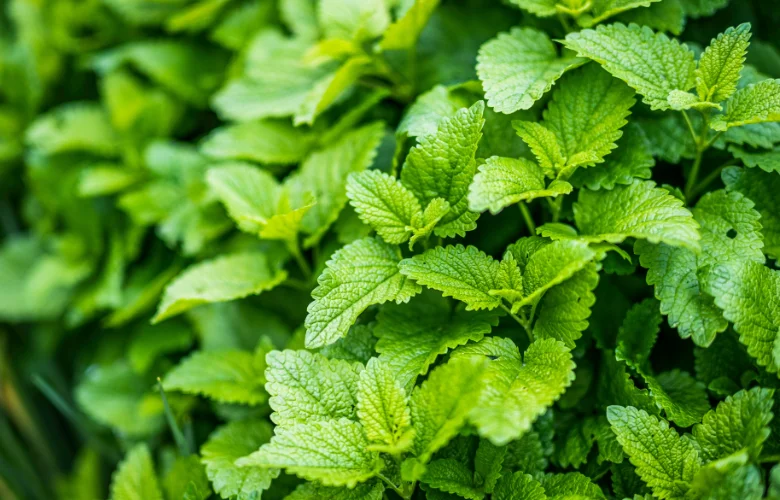
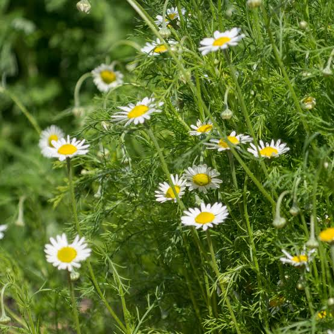

Você já ouviu falar das qualidades da erva-cidreira?
JM,22 de janeiro,2025

A erva-cidreira, também conhecida como capim-cidreira ou melissa,
oferece diversos benefícios para a saúde, sendo um calmante natural
e auxiliar no alívio de ansiedade, estresse, dores de cabeça e
problemas gastrointestinais. Além disso, pode melhorar a qualidade
do sono, fortalecer o sistema imunológico e até mesmo auxiliar no
controle da glicose no sangue.
Melhore seu sono com a camomila!
JM,02 de fevereiro,2025

A camomila é uma planta medicinal de pétalas brancas e centro
amarelo, que é muito utilizada na preparação de infusões para tratar
ansiedade, insônia, má digestão e cólica menstrual. Além disso,
também tem excelentes propriedades cicatrizantes, podendo ser usada
para ajudar na cicatrização de feridas. O nome científico da
camomila é Matricaria recutita e a parte mais utilizada é a sua
flor, que serve para preparar infusões, inalações, banhos de
assento, compressas ou pomadas. Além disso, a camomila também pode
ser utilizada para temperar pratos salgados como macarrão e frango,
ou para aromatizar doces como brigadeiro e bolos. A camomila pode
ser encontrada em ervanários, lojas de produtos naturais, farmácias
de manipulação, mercados e algumas feiras livres, na forma de flores
secas ou saquinhos de chá.
Hortelâ no cotidiano
JM,22 de fevereiro,2025
A camomila é uma planta medicinal de pétalas brancas e centro
amarelo, que é muito utilizada na preparação de infusões para tratar
ansiedade, insônia, má digestão e cólica menstrual. Além disso,
também tem excelentes propriedades cicatrizantes, podendo ser usada
para ajudar na cicatrização de feridas. O nome científico da
camomila é Matricaria recutita e a parte mais utilizada é a sua
flor, que serve para preparar infusões, inalações, banhos de
assento, compressas ou pomadas. Além disso, a camomila também pode
ser utilizada para temperar pratos salgados como macarrão e frango,
ou para aromatizar doces como brigadeiro e bolos. A camomila pode
ser encontrada em ervanários, lojas de produtos naturais, farmácias
de manipulação, mercados e algumas feiras livres, na forma de flores
secas ou saquinhos de chá.